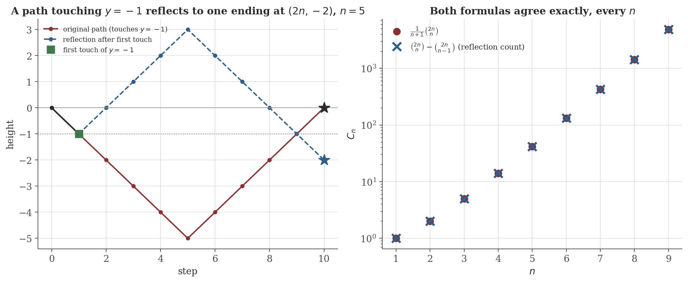
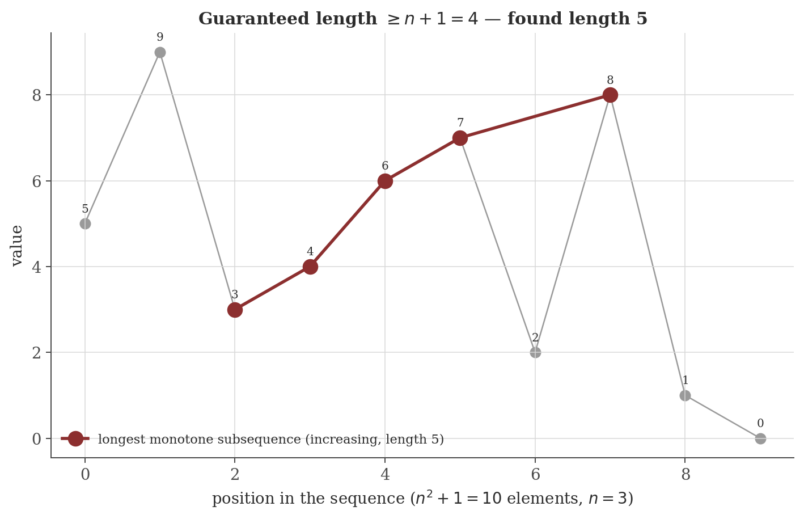

Combinatorics
Disclaimer: These are my personal notes compiled for my own reference and learning. They may contain errors, incomplete information, or personal interpretations. While I strive for accuracy, these notes are not peer-reviewed and should not be considered authoritative sources. Please consult official textbooks, research papers, or other reliable sources for academic or professional purposes.
Contents
- Counting principles: the bijective principle
- Binomial coefficients: Pascal and the Binomial Theorem
- Inclusion-Exclusion and derangements
- Generating functions: solving Fibonacci exactly
- Catalan numbers via the reflection principle
- Pigeonhole and the Erdős–Szekeres theorem
- Ramsey's theorem: $R(3,3)=6$
- Burnside's Lemma
- Computation
- Common pitfalls
- Connections
- References
1. Counting principles: the bijective principle
If finite sets $A,B$ are in bijection, $|A|=|B|$. Consequently: $|A\sqcup B|=|A|+|B|$ (disjoint union — partition the union and count each part), and $|A\times B|=|A||B|$ (partition $A\times B$ into $|A|$ copies of $B$, one per first coordinate).
Every counting formula in this note is, underneath, an explicit or implicit bijection between the objects being counted and some other set whose size is already known — this is the single idea the rest of the note keeps reusing, not a separate technique per formula.
2. Binomial coefficients: Pascal and the Binomial Theorem
$\binom nr$ is the number of $r$-element subsets of an $n$-element set.
$\binom nr=\binom{n-1}{r-1}+\binom{n-1}{r}$.
$(1+x)^n=\sum_{r=0}^n\binom nrx^r$.
Setting $x=1$: $\sum_r\binom nr=2^n$ (the number of subsets of an $n$-set, counted by size). Setting $x=-1$: $\sum_r(-1)^r\binom nr=0$ for $n>0$ — an identity Section 3 uses directly.
3. Inclusion-Exclusion and derangements
$\displaystyle\left|\bigcup_{i=1}^nA_i\right|=\sum_{k=1}^n(-1)^{k+1}\sum_{|S|=k}\left|\bigcap_{i\in S}A_i\right|$.
The number of permutations of $\{1,\ldots,n\}$ with no fixed point is $D_n=n!\sum_{i=0}^n\dfrac{(-1)^i}{i!}$.
Section 9's numbers show $D_n/n!\to1/e\approx0.3679$ rapidly — a permutation chosen uniformly at random is a derangement with probability converging to $1/e$, essentially independent of $n$ once $n$ is even moderately large, since $\sum_{k=0}^n(-1)^k/k!$ is the truncated Taylor series for $e^{-1}$.
4. Generating functions: solving Fibonacci exactly
For a sequence $(a_n)$, its (ordinary) generating function is the formal power series $G(x)=\sum_{n\geq0}a_nx^n$ — a bookkeeping device that turns recurrences into algebra.
For $F_0=0,F_1=1,F_n=F_{n-1}+F_{n-2}$: $\displaystyle F_n=\frac{\phi^n-\psi^n}{\sqrt5}$, where $\phi=\frac{1+\sqrt5}2,\psi=\frac{1-\sqrt5}2$.
This is generating functions doing genuine work, not merely restating a formula: the recurrence became an algebraic equation for $G(x)$, solving that equation and expanding the (rational) result back into a power series read off the closed form directly, term by term. The same method solves any linear recurrence with constant coefficients, with the recurrence's characteristic-equation roots playing $\phi,\psi$'s role in general.
5. Catalan numbers via the reflection principle
$C_n$ counts Dyck paths: sequences of $n$ up-steps ($+1$) and $n$ down-steps ($-1)$, from height $0$ to height $0$, that never go below $0$.
$C_n=\dfrac1{n+1}\dbinom{2n}n$.
Figure 1 draws the bijection directly: a path dipping below the axis, and its mirror image past the first touch of $-1$, landing two steps lower — exactly the map the proof constructs, checked against the closed form for $n=1,\ldots,9$.

6. Pigeonhole and the Erdős–Szekeres theorem
If $n$ objects are placed into $m$ containers, some container holds at least $\lceil n/m\rceil$ objects.
Any sequence of $n^2+1$ distinct real numbers contains a monotonically increasing or monotonically decreasing subsequence of length $n+1$.
Figure 2 computes $(\mathrm{inc}(i),\mathrm{dec}(i))$ for an actual random sequence and exhibits the guaranteed subsequence directly — the proof is constructive in exactly this sense: it doesn't just assert a long monotone run exists, it hands over the injective-map argument that finds one.

7. Ramsey's theorem: $R(3,3)=6$
$R(3,3)$ is the smallest $N$ such that every red/blue coloring of the edges of $K_N$ contains a monochromatic triangle.
Together: $R(3,3)=6$ exactly, both directions fully proved — existence for $N=6$, and an explicit witness showing $N=5$ is not enough. Ramsey numbers grow explosively past this case: $R(4,4)=18$ is known, but $R(5,5)$ remains unknown to this day, with only the bounds $43\leq R(5,5)\leq48$ established (as of this writing) — Paul Erdős's famous remark was that humanity should commit all its resources to computing $R(5,5)$ before an alien invasion demanding it on pain of destruction, but might reasonably negotiate on $R(6,6)$.
8. Burnside's Lemma
For a finite group $G$ acting on a finite set $X$: the number of orbits $|X/G|=\dfrac1{|G|}\displaystyle\sum_{g\in G}|X^g|$, where $X^g=\{x\in X:gx=x\}$.
Application: counting necklaces of $n$ beads in $k$ colors up to rotation, with $G=\mathbb Z_n$ acting by rotation. A rotation by $d$ positions fixes exactly the colorings constant on each cycle of that rotation; rotation by $d$ has $\gcd(n,d)$ cycles, so it fixes $k^{\gcd(n,d)}$ colorings. Burnside's Lemma gives the number of distinct necklaces as $\frac1n\sum_{d=0}^{n-1}k^{\gcd(n,d)}$ — a formula that, regrouped by the value of $\gcd(n,d)$, is exactly the standard necklace-counting formula $\frac1n\sum_{e\mid n}\varphi(n/e)k^e$ (Euler's totient function counting how many $d$ give each gcd value).
9. Computation
The figures above are generated by combinatorics/generate_figures.py. The snippet below checks Binet's formula and the derangement formula against their defining recurrences.
import math
def fib_recurrence(n):
a, b = 0, 1
for _ in range(n):
a, b = b, a + b
return a
def fib_binet(n):
phi, psi = (1 + math.sqrt(5)) / 2, (1 - math.sqrt(5)) / 2
return round((phi**n - psi**n) / math.sqrt(5))
for n in [10, 20, 30, 40, 50]:
print(n, fib_recurrence(n), fib_binet(n), fib_recurrence(n) == fib_binet(n))
def derangements_recurrence(n):
if n == 0: return 1
if n == 1: return 0
dp = [1, 0]
for i in range(2, n + 1):
dp.append((i - 1) * (dp[-1] + dp[-2]))
return dp[n]
def derangements_formula(n):
return round(math.factorial(n) * sum((-1)**i / math.factorial(i) for i in range(n + 1)))
for n in [5, 8, 10]:
print(n, derangements_recurrence(n), derangements_formula(n))
Actual output:
10 55 55 True
20 6765 6765 True
30 832040 832040 True
40 102334155 102334155 True
50 12586269025 12586269025 True
5 44 44
8 14833 14833
10 1334961 1334961Binet's closed form (Section 4, involving irrational $\phi,\psi$ and division by $\sqrt5$) reproduces the purely integer recurrence exactly, with simple rounding, up to $F_{50}$ — the irrational parts cancel precisely, not approximately. The derangement recurrence and the Inclusion-Exclusion formula (Section 3) agree exactly too, at every $n$ tested.
10. Common pitfalls
$|A\cup B|=|A|+|B|$ only when $A\cap B=\varnothing$; otherwise Section 3's Inclusion-Exclusion is the correct (and more general) tool — $|A\cup B|=|A|+|B|-|A\cap B|$, with the addition principle as the special case $|A\cap B|=0$. Forgetting the correction term is the single most common combinatorics error.
Section 6's proof shows a monotone subsequence of length $\geq n+1$ exists, and the injective-map argument even shows how to find one algorithmically (Figure 2) — but the basic Pigeonhole principle in its bare form (Section 6's first theorem) is a pure counting argument: it certifies existence without saying which container is the crowded one, only that at least one must be.
$R(3,3)=6$ is exact: every single 2-coloring of $K_6$ has a monochromatic triangle (Section 7), and there is a specific coloring of $K_5$ with none. Ramsey numbers for larger cliques grow so explosively (the best known bounds for $R(5,5)$ still leave a gap of several units) that "the exact value is known" is the exception, not the rule, past the smallest cases.
$|X^g|$ for a single $g$ (say the identity) is $|X|$ itself, wildly overcounting orbits if used alone — the whole point of Section 8's theorem is the average over all of $G$, not any single group element's fixed-point count. The formula also presupposes $G$ genuinely acts on $X$ (respecting the group operation); applying it to an arbitrary collection of permutations that isn't closed under composition gives a meaningless number.
11. Connections
- Graph theory. Ramsey's theorem (Section 7) is a statement about edge-colorings of the complete graph $K_n$; the pigeonhole argument used there is the same counting tool behind that note's edge-bound proofs (its Section 4) that $K_5$ and $K_{3,3}$ are non-planar.
- Mathematical logic. Cantor's diagonalization (that note's Section 7) and the injective-map trick in the Erdős–Szekeres proof (Section 6 here) are both "construct an object to avoid every element of a finite or countable list" arguments, differing mainly in what "avoid" means in context.
- Probabilistic models. The Binomial Theorem (Section 2) is the combinatorial fact underneath that note's Beta-Binomial conjugacy derivation (its Section 5), where $\binom nk$ counts exactly the arrangements a binomial likelihood sums over; the derangement probability $D_n/n!\to1/e$ (Section 3) is a discrete-probability computation of the same flavor as that note's Weak Law of Large Numbers (its Section 2), both convergence statements about a specific combinatorial count divided by its total.
12. References
- Stanley, R. P. (2011). Enumerative Combinatorics, Volume 1 (2nd ed.). Cambridge University Press.
- van Lint, J. H., & Wilson, R. M. (2001). A Course in Combinatorics (2nd ed.). Cambridge University Press.
- Graham, R. L., Rothschild, B. L., & Spencer, J. H. (1990). Ramsey Theory (2nd ed.). Wiley.
- Wilf, H. S. (2005). generatingfunctionology (3rd ed.). A K Peters.